comprarcarne.es no es un encargo suelto. AI Creative Lead lleva la dirección creativa de la marca desde su lanzamiento en 2024: identidad visual, web, fotografía de producto, contenido para redes y campañas. El spot de TV nace de ese trabajo: el mismo magenta, la misma caja y la misma promesa de carne fresca en tu puerta.
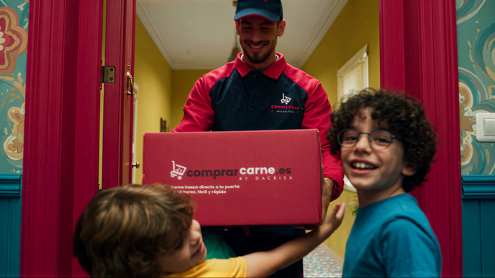
COMPRARCARNE.ESHa llegado la cajita
Un spot de TV para comprarcarne.es, la carnicería online de Málaga: un pedido, una espera, un timbre y la caja real de la marca en la puerta, producido de principio a fin con IA generativa para un cliente con el que trabajamos desde 2024.
Clientecomprarcarne.es (carnicería online, Málaga)
TipoSpot de TV · trabajo para cliente
EntregadoFilm · 16:9 · 21 s
Cliente desde2024
El proyecto
01 / PROYECTO
comprarcarne.es es una carnicería online de Málaga que lleva carne fresca, envasada al vacío y en frío, a casas de toda la Península. La idea: un spot de TV que convierta la propia compra en la historia, del primer toque en el móvil al primer bocado, con una familia como reparto. Trabajo para cliente de AI Creative Lead, con dirección de César Cabrera.
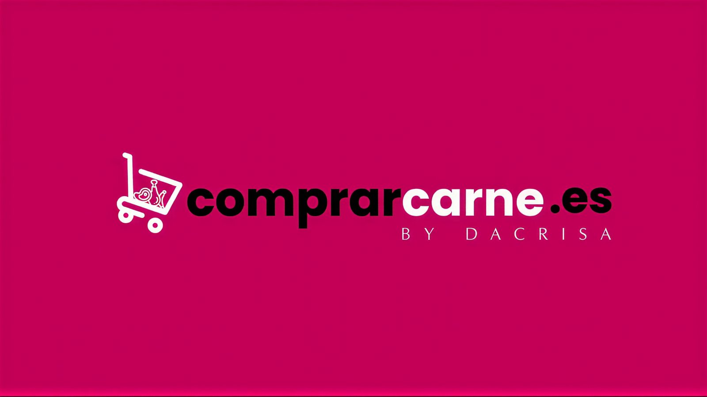
El reto
02 / PROBLEMA
Niños, comida y un producto real: tres de las cosas más difíciles de rodar.
Un cliente real con un producto real. El spot tenía que enseñar la caja de reparto de la marca —color, logo y textos impresos—, hacer que la carne apetezca en pantalla y llevar a una familia por una casa en la que la cámara no para nunca, en un solo pase de TV.
- La caja real del cliente, exacta, que solo aparece cuando suena el timbre.
- Comida que da hambre: costra dorada, chisporroteo, cuchillo y tenedor.
- Niños de edades y caras claramente distintas: hermanos, no gemelos.
Dirección creativa
03 / DECISIÓN
Color español a todo volumen y una cámara que no para nunca. La historia es una cuenta atrás —pedido, espera, timbre, caja, sartén y mesa— y el producto entra de verdad justo cuando suena el timbre.
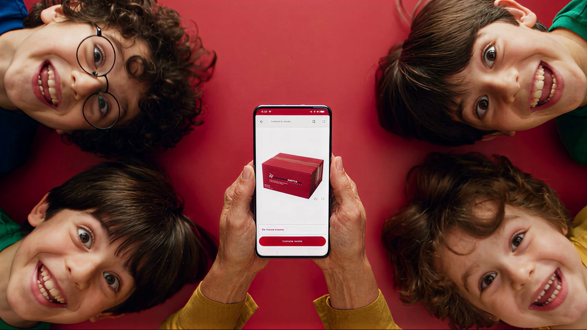
00:00EL PEDIDO
«¿Pedimos la cajita?»
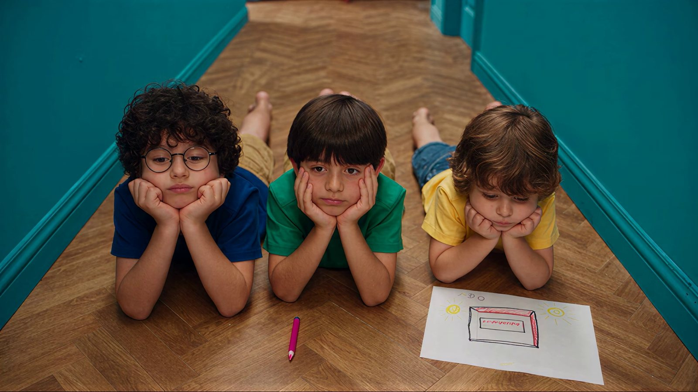
00:06LA ESPERA
Todos mirando la puerta
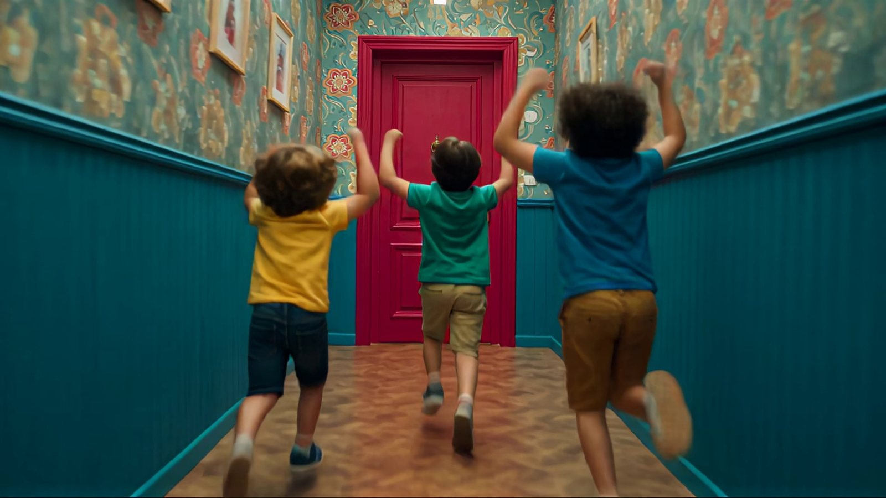
00:08DING-DONG
La carrera por el pasillo
00:10LA CAJITA
La caja real, vista por primera vez
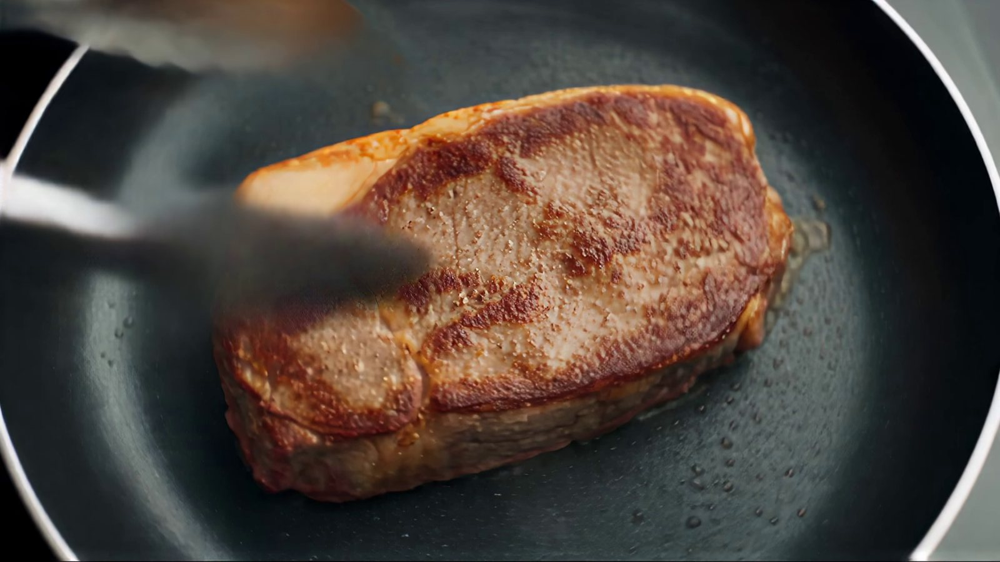
00:12LA SARTÉN
Del envasado al vacío a la costra dorada
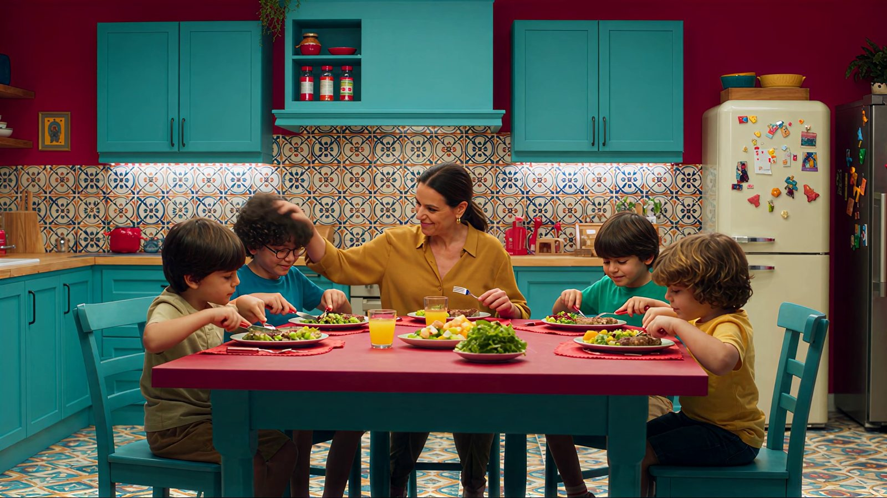
00:16LA MESA
Todos a comer, con cuchillo y tenedor
PaletaLA CASA → LA MARCA
#C64349#308985#B98231#005F66#DA9624#C30056
Reglas de producciónBIBLIA
01La caja real solo se ve cuando suena el timbre.
02Antes, solo en la pantalla del móvil y en el dibujo de un niño.
03Cada estancia en la paleta: carmesí, turquesa, mostaza, azul petróleo.
04Los personajes miran por la ventana desde dentro de casa.
05Todos comen con cuchillo y tenedor.
06Sin rótulos ni sobreimpresiones: la marca habla a través de la caja y el cierre.
Una familia del color de la casa.
04 / REPARTO
La familia se diseñó antes de producir y se vistió con la paleta del decorado: mamá de mostaza y los niños de azul, verde y amarillo, con edades, estaturas y caras claramente distintas. Hermanos, no gemelos.
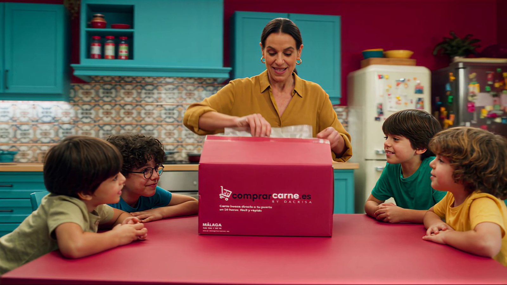
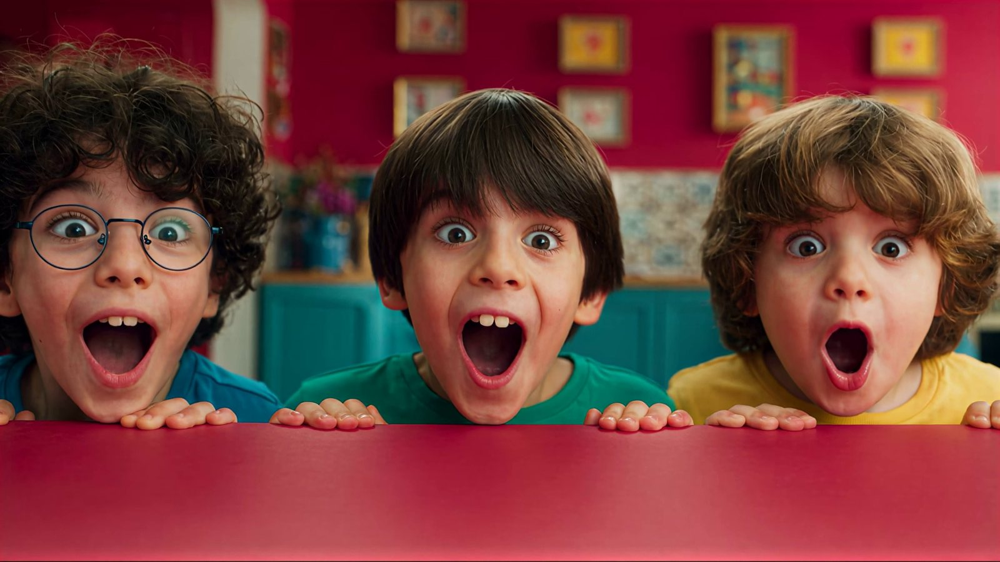
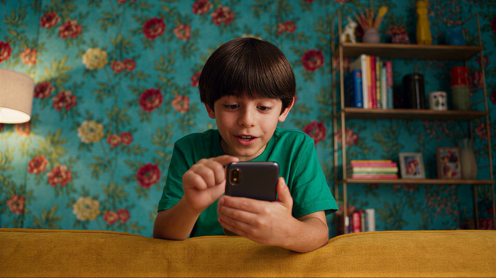
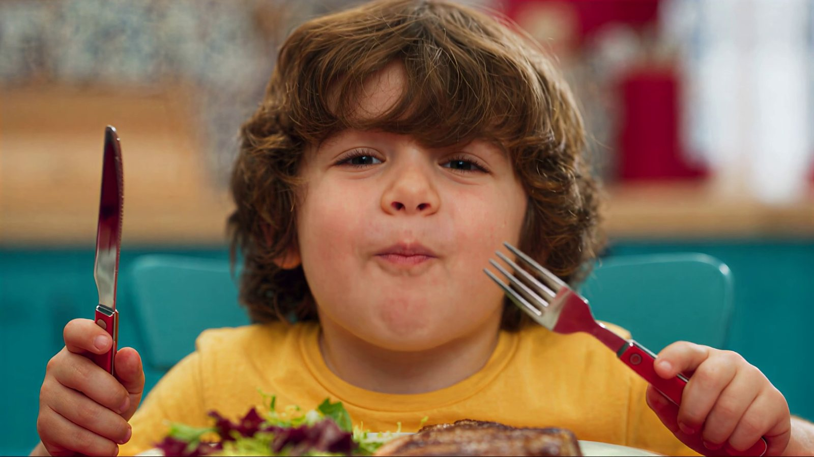
La caja es la protagonista.
05 / PRODUCTO
Antes del timbre, la caja solo existe como foto en un móvil y como dibujo infantil. Cuando se abre la puerta llega de verdad —la caja del cliente, con su color, su logo y sus textos exactos— y a partir de ahí la historia es lo que hay dentro: piezas envasadas al vacío que acaban doradas en la sartén y fileteadas en la mesa.
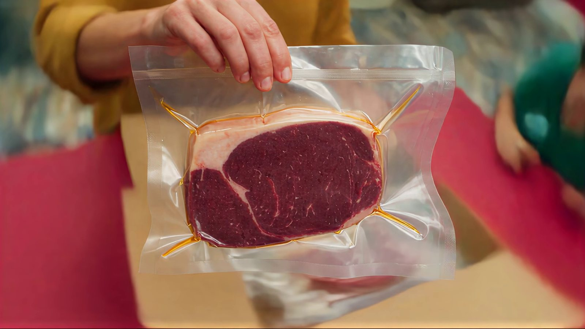
Comida que da hambreSARTÉN → MESA
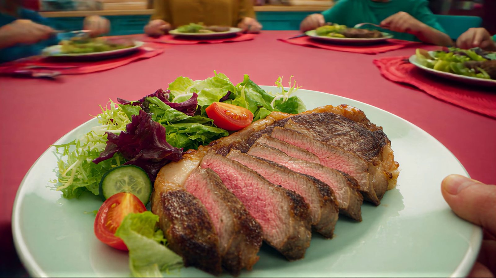
16 planos, una cuenta atrás.
06 / PLANO A PLANO
Cada plano le pasa la energía al siguiente: barridos, un match-cut en giro del envasado a la sartén y un único movimiento continuo que recorre el pasillo, abre la puerta y deja la caja en brazos de los niños.
Mapa de planos — la película entera en una hoja16 / 16
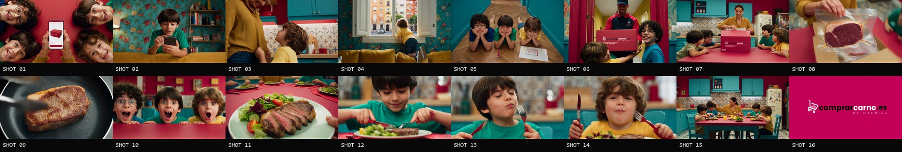
Los 16 planos00:00 → 00:21
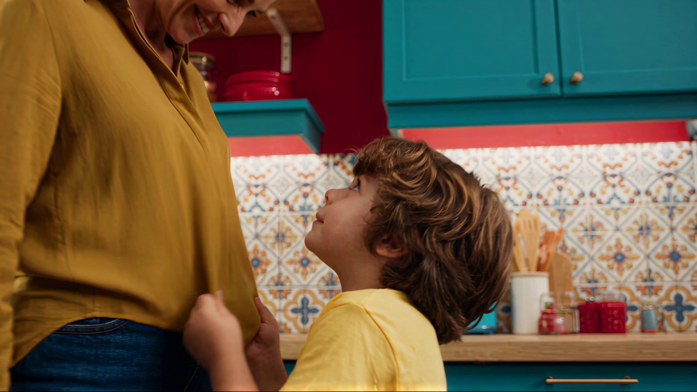
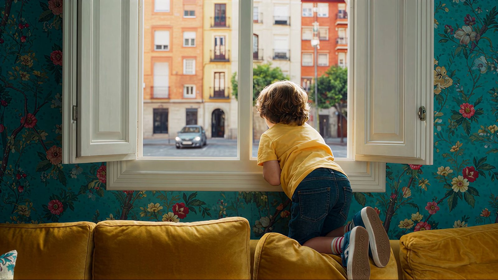
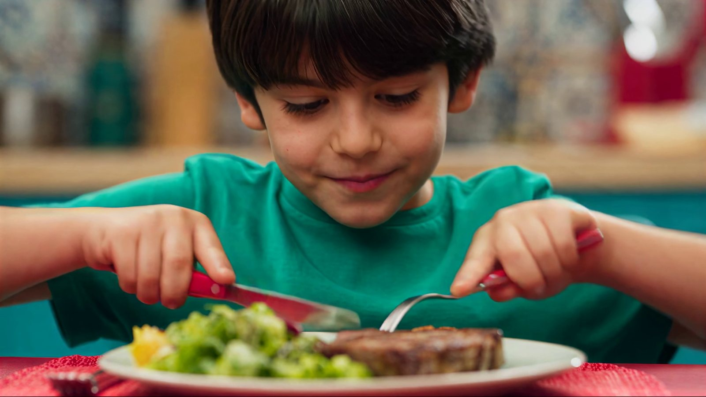
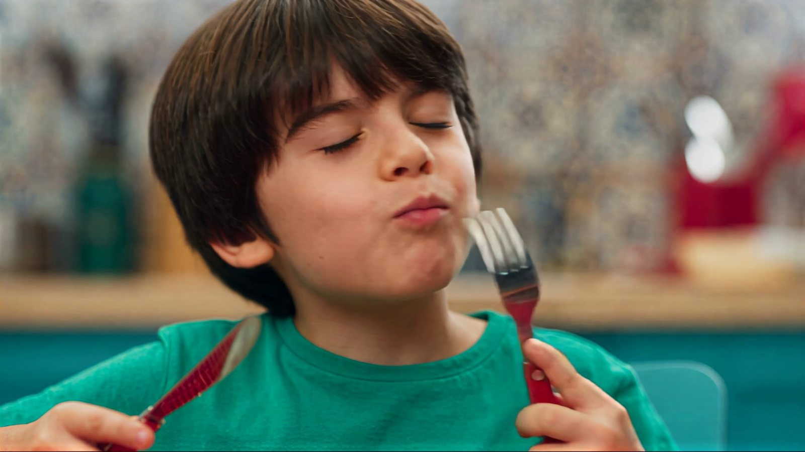
El film
07 / FILM
Dieciséis planos, una casa, una caja. Masterizado en 16:9 para TV.
Un cliente, no una prueba.
08 / CLIENTE
Visitar comprarcarne.es ↗
La producción
09 / RESULTADO
Contado del máster. Sin estimaciones.
21segundos de film, cierre incluido
16planos en el máster
4estancias de una casa: cocina, salón, pasillo y entrada
1producto real: la caja del cliente
0cámaras, equipos o localizaciones alquiladas
2024cliente desde el lanzamiento de la marca
Qué demuestra para tu marca.
10 / PARA TU MARCA
01
Tu producto real, exacto.
Caja, etiqueta y color aparecen tal cual, y la historia se construye a su alrededor.
02
Familias sin rodaje.
Niños, una casa vivida y comida en la mesa, producidos sin cámaras, decorados ni equipo.
03
El e-commerce contado como historia.
Pedido, espera, timbre y unboxing: el proceso de compra se convierte en el guion.
Preguntas sobre spots con IA para marcas
11 / PREGUNTAS
01
¿Puede un spot con IA enseñar el producto real de una marca?
Sí. Aquí la caja de reparto real del cliente —color, logo y textos impresos— se reprodujo a partir de imágenes de referencia y solo aparece cuando suena el timbre.
02
¿Puede la comida resultar apetecible en un anuncio generado con IA?
Sí, si se dirige como un rodaje de food: costra dorada y chisporroteo en la sartén, uso real de cuchillo y tenedor y cada plato revisado plano a plano.
03
¿Puede salir un niño en un spot con IA?
Sí. Los niños son personajes generados con IA —no se graba a ningún niño real— y la familia se diseña antes de empezar a producir.
04
¿Necesita un spot con IA rodaje, decorado o equipo?
No. La casa, la familia y cada plano se generaron: sin cámaras, sin equipo y sin alquilar localización. La dirección, el montaje y la revisión funcionan como en cualquier producción.
Spot de TV creado por AI Creative Lead para comprarcarne.es. Todos los planos se produjeron con IA generativa; todos los personajes son generados con IA y no se grabó a ningún niño real.
Envíanos el brief.
Marca, mercado y canal. Volvemos con un treatment y un plan de producción.
Envíanos el brief